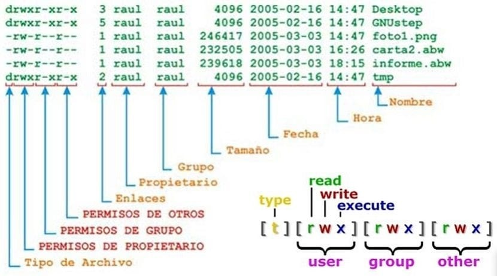
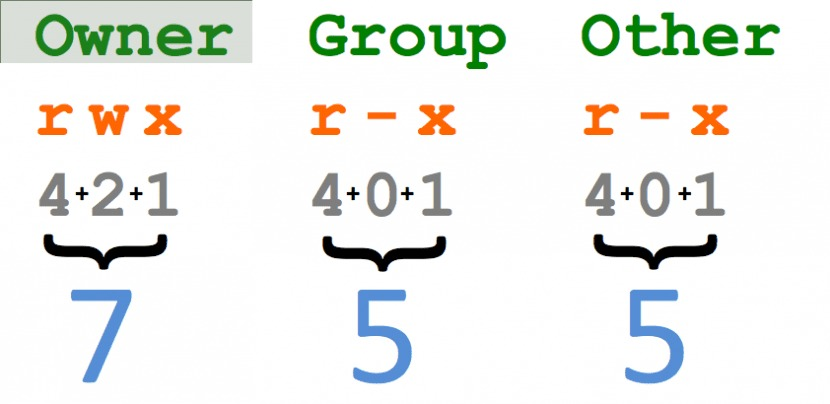

Instalación de Ubuntu
Para el funcionamiento de ROS es necesario instalar Ubuntu.
En este curso trabajaremos con Ubuntu 22.04 y ROS Humble.
Recursos de descarga
Imagen ISO Ubuntu 22.04.6:
Descargar desde releases.ubuntu.com
Opciones de instalación
Comparativa: Partición del Disco vs Máquina Virtual
Característica |
Instalar en Disco (Dual Boot) |
Máquina Virtual |
|---|---|---|
Rendimiento |
Alto, accede directamente al hardware |
Medio, depende del host y configuración |
Espacio dedicado |
Necesita particionar el disco real |
Usa archivo virtual, configurable |
Acceso a periféricos |
Total (puertos, GPU, cámara, etc.) |
Limitado (USB y sensores configurables) |
Instalación de drivers |
Manual, igual que en una instalación real |
Generalmente menos problema con drivers |
Cambiar entre SO |
Reinicio necesario |
Cambio instantáneo dentro del host |
Ideal para |
Uso profesional, proyectos con hardware real |
Pruebas, simulación, desarrollo portable |
Tutoriales recomendados
Opción 1: Partición de disco (Dual Boot):
Es necesario utilizar la ISO descargada de Ubuntu 22.04 LTS
Opción 2: Máquina Virtual:
Guía práctica aquí
Verificación de instalación de Python
Una vez dentro de Ubuntu, abre una terminal y ejecuta:
python3 --version
Debe mostrarse algo como Python 3.10.x, que es la versión por defecto en Ubuntu 22.04.
Ubuntu
Ubuntu es una distribución del sistema operativo GNU/Linux basada en Debian. Es una de las distribuciones más populares por su facilidad de uso, estabilidad y fuerte comunidad. Se utiliza ampliamente en servidores, entornos de desarrollo, sistemas embebidos, ciencia y escritorios personales.
Usos comunes de Ubuntu:
Desarrollo de software (Python, C++, ROS 2, Web)
Educación y simulación (Gazebo, R)
Administración de sistemas y redes (SSH, Docker, servidores web)
Automatización de tareas con Bash scripting
Virtualización y contenedores (QEMU, VirtualBox, LXD)
Entornos gráficos personalizados y ligeros
La siguiente bibliogradía aborda más a detalle el uso básico de linux
Comandos básicos de Linux
En general los comandos en ubuntu siguen la siguiente extructura:
comando (opciones) (argumentos)
Aquí algunos comandos fundamentales que debes dominar:
1. Gestion de arhivos y directorios
ls: Lista archivos y directorios.
ls -l # muestra una lista detallada con permisos, propietarios, tamaño, etc.
cd: Cambia de directorio.
cd /home/ # te lleva al directorio Home.
mkdir: Crea un nuevo directorio.
mkdir nuevo_directorio.
rm: Elimina archivos o directorios.
rm archivo.txt # elimina el archivo archivo.txt.
rm -r carpeta # elimina una carpeta y su contenido.
cp: Copia archivos o directorios.
cp archivo1.txt archivo2.txt # copia el archivo archivo1.txt en archivo2.txt.
mv: Mueve o renombra archivos y directorios.
mv archivo.txt /ruta/destino # mueve un archivo a una nueva ubicación.
2. Permisos y gestión de usuarios:
Los diferentes directorios poseen niveles de manipulación que son:

los comandos que permiten modificar los permisos de directorios son:
chmod: Cambia los permisos de archivos y directorios.
chmod 755 archivo.sh # otorga permisos de lectura, escritura y ejecución al propietario, y solo lectura y ejecución al resto.
chown: Cambia el propietario de archivos o carpetas.
chown usuario # grupo archivo.txt.
De manera decimal tenemos: 
3. Gestión de procesos:
ps: Muestra los procesos activos.
ps aux # lista todos los procesos.
top: Muestra los procesos en ejecución y su uso de recursos.
kill: Termina un proceso específico.
kill 1234 # termina el proceso con el PID 1234.
4. Instalación de paquetes y software:
apt: Usado para gestionar paquetes en distribuciones basadas en Debian (como Ubuntu).
sudo apt install ros-humble-desktop # instala la versión Humble de ROS2.
snap: Sistema para instalar paquetes universales.
sudo snap install nombre_paquete.
5. SSH (Secure Shell): ¿Qué es SSH?: SSH permite acceso remoto seguro a otra máquina, útil cuando trabajas con robots o servidores de manera remota. estructura: ssh usuario@ip_del_servidor # Conecta a un servidor remoto.
ssh usuario@192.168.1.100 # conecta a una máquina con esa IP.
Transferir archivos vía SSH (SCP):
scp archivo.txt usuario@192.168.1.100:/ruta/destino # Copia archivos a una máquina remota.
6. Gestión de red:
ifconfig: Muestra la configuración de red.
ping: Prueba la conexión a otra máquina.
ping google.com # verifica si hay conexión con Google.
netstat: Muestra las conexiones de red activas.
*Firewall: Configurar el firewall es esencial para habilitar o restringir puertos específicos, sobre todo al usar ROS o ROS2 en redes.
UFW (Uncomplicated Firewall): Firewall básico en Ubuntu.
sudo ufw status #Ver el estado del firewall.
sudo ufw enable #Habilitar el firewall.
sudo ufw allow 22 #Permitir conexiones SSH (puerto 22).
sudo ufw allow 11311 #Permitir conexiones en el puerto que usa ROS.
GitHub
GitHub es una plataforma de control de versiones basada en Git que permite almacenar, compartir y colaborar en código fuente. Es ideal para proyectos ROS, especialmente al trabajar en equipos o distribuir paquetes.
Comandos básicos de Git
# Configurar usuario
git config --global user.name "Tu Nombre"
git config --global user.email "tu_correo@example.com"
# Clonar un repositorio
git clone https://github.com/usuario/repositorio.git
# Crear y subir cambios
git add .
git commit -m "Descripción del cambio"
git push origin main
# Sincronizar cambios
git pull origin main